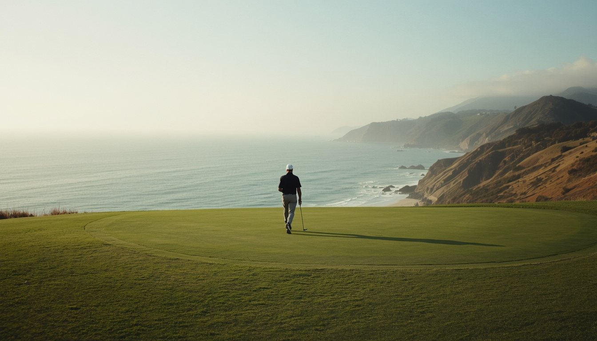

A gentle opener that rewards a committed drive up the right, opening the angle for a second that avoids the left bunkers. Wind off the sea tends to help; the safe miss is short-right of the green, leaving a simple pitch to settle the nerves.
The card's sternest test. A long two-shotter that demands a straight drive between fairway bunkers, then a mid-iron to a green that turns away left. Into the prevailing breeze it plays a club longer—take the fat part of the green and be happy with par.
The fairway rolls and tilts, so position matters more than power. Favor the high side off the tee to hold the short grass; anything leaked right feeds into rough. A ball above your feet is the common miss—aim for the center and let the contours do the rest.
A long one-shotter over rolling ground, well away from the sea. Club selection is everything: the green is deep but narrow, guarded left by a bunker. Wind rarely factors here—trust the yardage, favor the front-right entrance, and two putts is a good result.
Reachable in two for the long hitter who finds the fairway, but native grasses pinch the landing area. Lay back and the third is a simple wedge. The green sits in a shallow bowl that gathers a running shot, so favor the middle and take your birdie chance.
The shortest hole on the front, a flick with a short iron to a wide but shallow green. Depth control is the whole test—long leaves a slippery downhill putt. Wind swirls between the dunes, so read the flag before you commit and aim for the heart.
A driveable-looking line tempts the bold, but dunes and rough frame a narrow corridor. The percentage play is a fairway metal to the fat part, leaving a full wedge. Miss right and the dunes block your view; the safe miss is left, short of the green.
A mid-length par four that bends gently right. A drive down the left opens the green; from the right, a bunker guards the direct line. The surface runs back to front, so leave the approach below the hole and give the putt a chance to drop.
The front nine's closer swings back toward the clubhouse. A solid drive leaves a mid-iron to a green that falls away at the back. Into the wind it plays long—club up, favor the front, and take a par to the turn. Long and left is dead.

The ocean stretch · holes 10–14Demonstration image
The Pacific On the ocean stretch (holes 10–14)In play
The routing turns and the Pacific arrives. The tee shot plays to a fairway sloping toward the cliff, so favor the inland side and resist chasing the view. The green sits nearer the edge than it looks—the safe miss is short and left, never long.
The Pacific On the ocean stretch (holes 10–14)In play
A short iron across a corner of the bluff, with nothing but ocean down the right. Wind off the water pushes everything toward the edge, so aim at the left half and let it drift. Bailing left leaves an awkward chip, but it keeps your ball—and your card—dry.
The Pacific On the ocean stretch (holes 10–14)In play
A breather along the water, and the card's kindest hole. A conservative tee shot leaves a short approach to a generous, receptive green. Enjoy the walk and the view—just keep the drive out of the right rough, where the cliff edge waits.
The Pacific On the ocean stretch (holes 10–14)In play
The last of the ocean stretch and a genuine test. A demanding drive must hold a fairway that spills toward the sea; the second is played across a diagonal to a green perched above the water. Par here is a small victory—favor the safe, inland miss.
The longest hole on the card turns the round for home. Three honest shots are the plan: a straight drive, a lay-up short of the cross-bunkers, then a wedge. Chasing the green in two brings the fairway traps into play—patience earns a birdie look.
A strong two-shotter back inland, away from the wind off the sea. The drive is framed by bunkers left and right; the second climbs slightly to a green that hides its back tier. Take one more club than you think, and favor the safe front-center.
The penultimate hole plays toward the clubhouse with out-of-bounds lurking right. A drive up the left is the confident line, leaving a mid-iron in. The green slopes back to front—stay below the hole, two-putt, and carry momentum to the last.
A striking one-shot finish to a green ringed by bunkers, with the coast behind. The tee shot is all that stands between you and the clubhouse—pick a club that carries the front sand, aim at the flag, and finish with a confident swing.